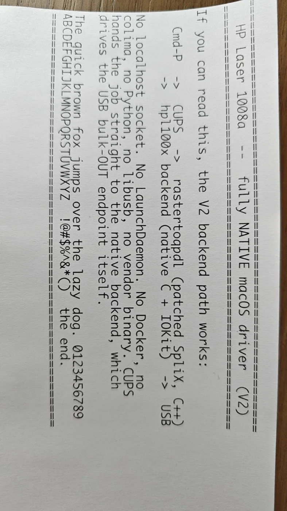
HP Laser 1008a macOS driver
Restore use of selected HP Laser printers without official macOS drivers through the native macOS print path.
Showing records 1–28; filtering loads all pages in this category.

Restore use of selected HP Laser printers without official macOS drivers through the native macOS print path.
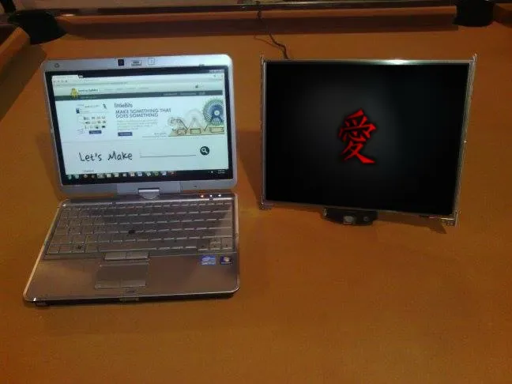
The author buys a controller and power supply matched to the panel number, turning a removed laptop LCD into a standalone external display.

Turn an older USB scanner into a network scanning device.
 Fallback
FallbackEvaluate continued use of an older Brother laser printer on a modern system.
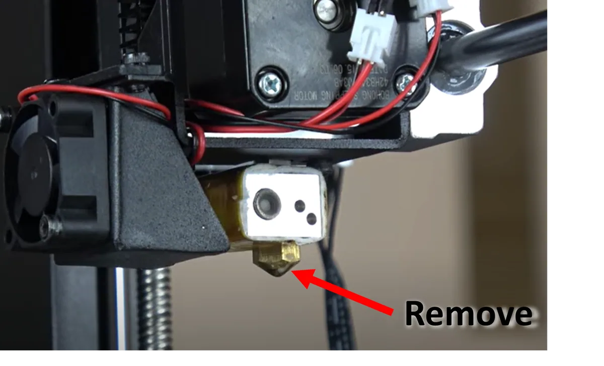
The instructions reuse an FFF/FDM printer with working three-axis motion and heater, replacing the nozzle with a sealing tool that follows programmed paths.

The author tests the idle printer's three axes, removes extrusion hardware and adds a separately powered spindle and tool for light cutting.
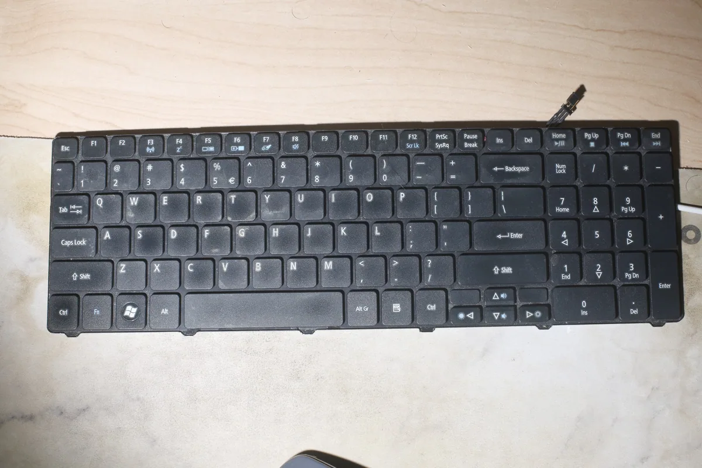
The author reverse-maps an Acer/eMachines MP-09B23U4-6983 keyboard matrix and uses a salvaged STM32 as a USB keyboard controller.
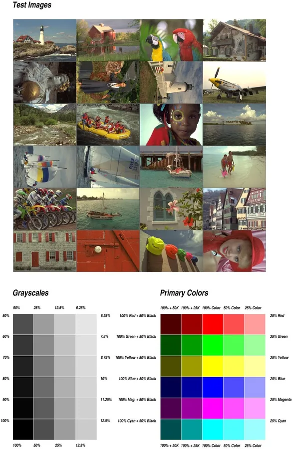
Use an older host as a network print server.
FallbackResearch conversion and backend paths for older printers in a modern Linux print stack
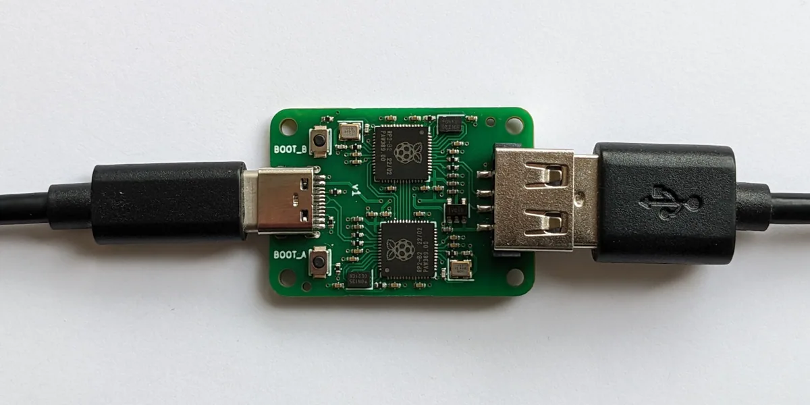
Remap an older keyboard, mouse, controller, or other USB input device.
FallbackExpose a USB printing or scanning device as a network-accessible service.
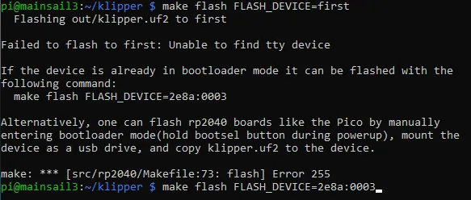
Evaluate a replacement control-firmware path for an older 3D printer.
FallbackResearch reusing an idle Kinect for depth sensing, scanning, or interactive input
FallbackEvaluate continued Linux configuration of buttons, DPI, and profiles on an older gaming mouse
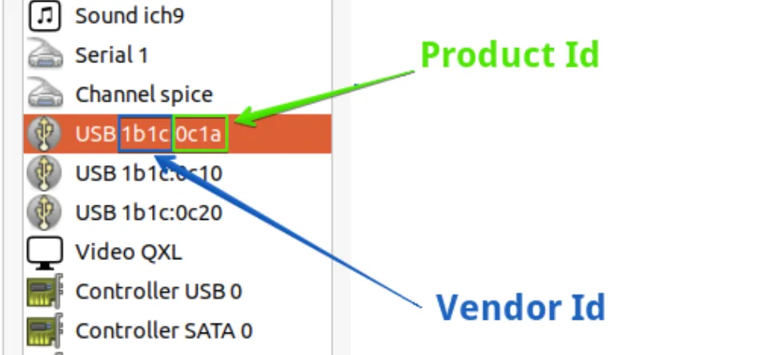
Research reading and controlling existing PC accessories when vendor software is unavailable
Give a still-functional older 3D printer a maintainable firmware path.
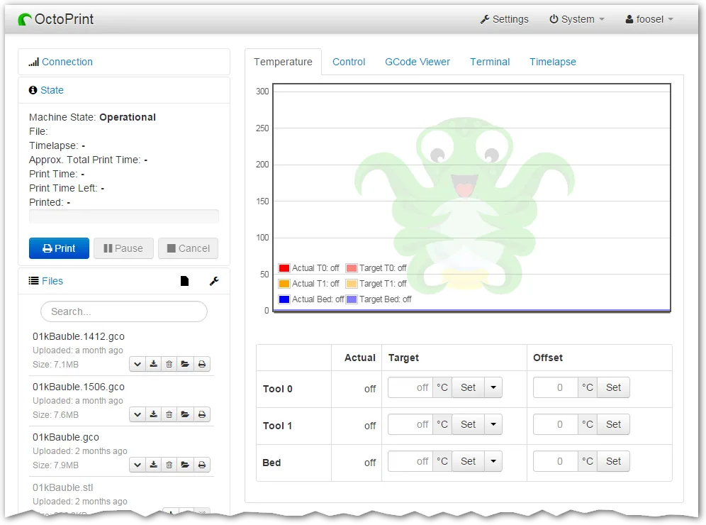
Add browser-based monitoring and control to an older 3D printer.
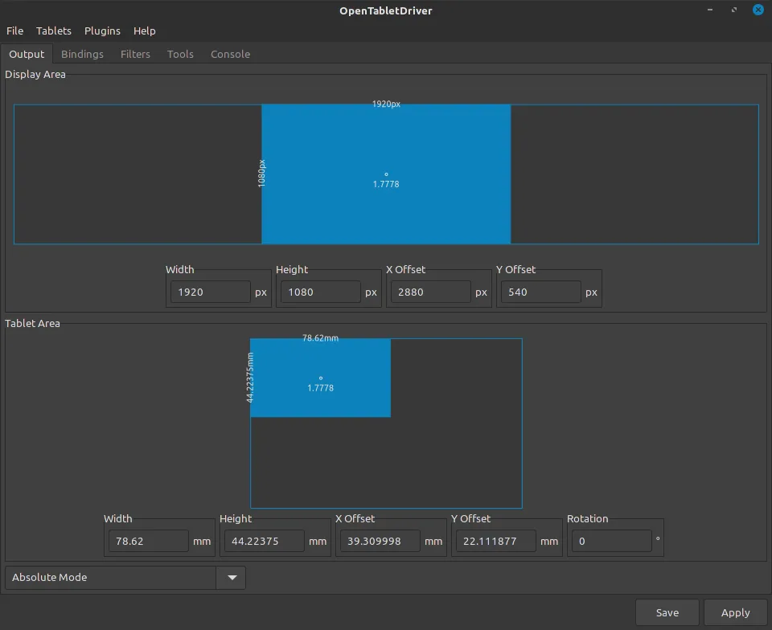
Evaluate continued input use of an older drawing tablet on a modern system
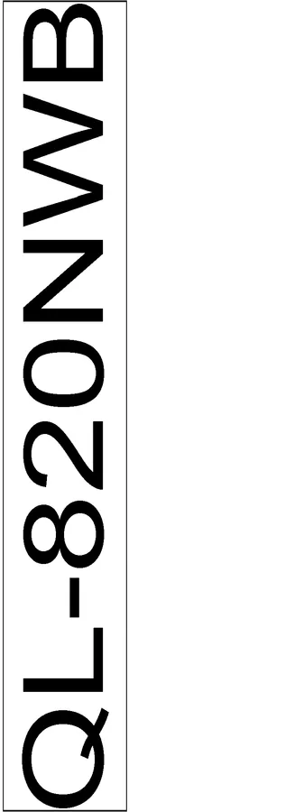
Research a Linux driver path for continued use of an existing label printer
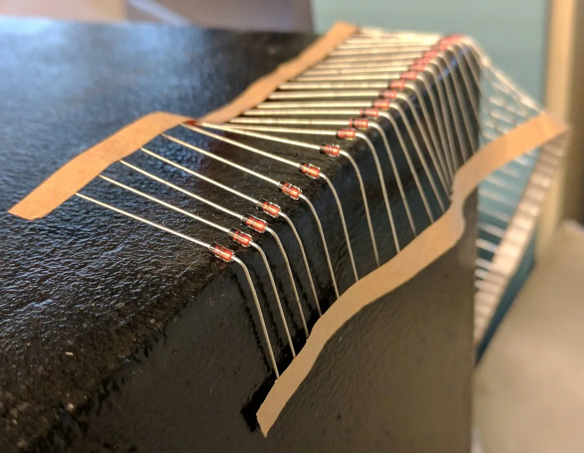
Reconfigure or extend the useful life of a programmable keyboard.
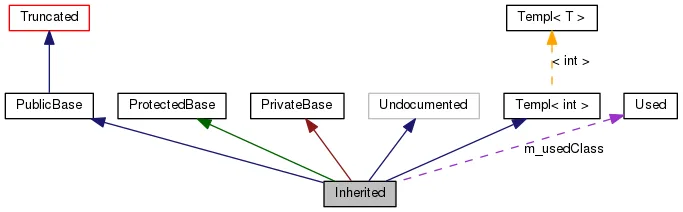
Evaluate alternative firmware for an older 3D-printer control system.
FallbackEvaluate continued Linux use of an existing network scanner
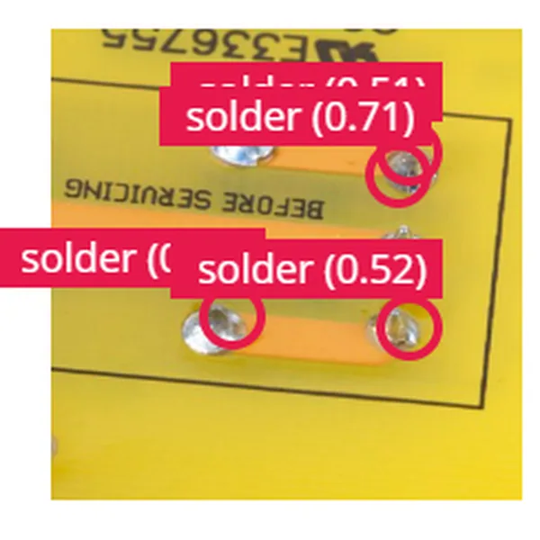
The team mounts a soldering iron and camera on a home 3D-printer motion system, using vision to find joints and attempt automated component removal.

The project combines local waste plastic with motion parts salvaged from older 3D printers to create an accessible recycling/printing machine.
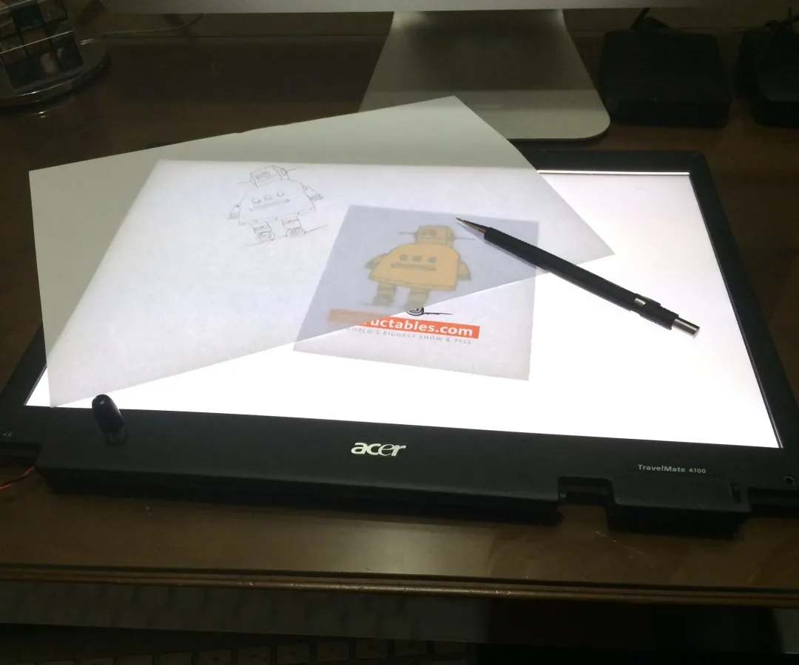
The tutorial removes the broken liquid-crystal layer while retaining diffuser sheets and CCFL/LED backlight, turning a non-imaging screen assembly into a drawing light table.
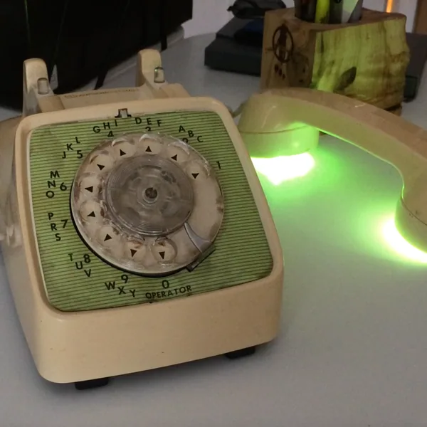
The author adds control electronics and lighting to an old GTE rotary phone, using dial pulses for colors and the hook switch to select odd/even positions.
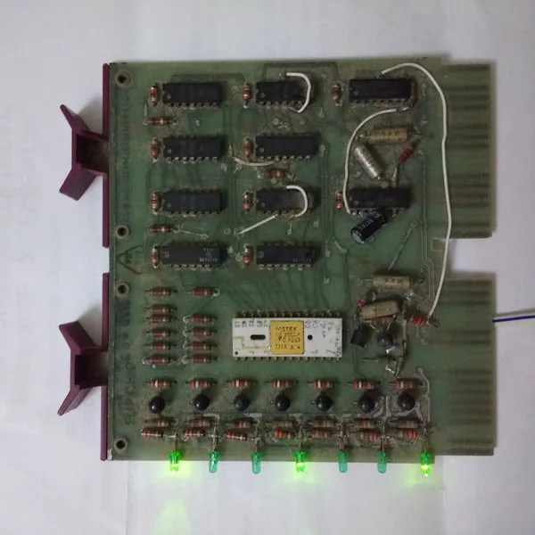
The author modifies a DEC LA30 terminal character-generator board so counters scan its ROM and seven LEDs expose dot-matrix row data.
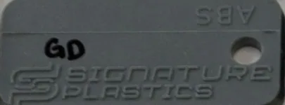
The author shares modular keyboard matrices and interface boards on the VCF forum to replace scarce Apple II, OSI and other vintage keyboards, including a working prototype.
Remove a filter or try another device/model term.